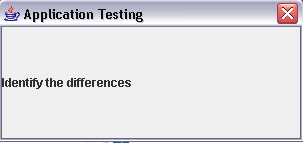
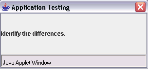

One of the main goals of the Java environment is to make browser users feel secure running any applet. To achieve this goal, we've started out conservatively, restricting capabilities perhaps more than necessary. As time passes, applets will probably get more and more abilities.This page tells you about the current applet security restrictions, from the point of view of how they affect applet design. For more information on applet security, you should refer to:
Frequently Asked Questions - Applet SecurityEach applet viewer has a
SecurityManagerobject that checks for applet security violations. When aSecurityManagerdetects a violation, it creates and throws aSecurityExceptionobject. Generally, theSecurityExceptionconstructor prints a warning message to the standard output. An applet can catchSecurityExceptions and react appropriately, such as by reassuring the user and by resorting to a "safer" (but less ideal) way of accomplishing the task.Some applet viewers swallow some
SecurityExceptions, so that the applet never gets theSecurityException. For example, the JDK Applet Viewer's implementation of theAppletContextgetAppletandgetAppletsmethods simply catches and ignores anySecurityExceptions. The user can see an error message in the standard output, but at least the applet gets a valid result from the methods. This makes some sense, sincegetAppletsshould be able to return any valid applets it finds, even if it encounters invalid ones. (The Applet Viewer considers an applet valid if it's loaded from the same host as the applet that's callinggetApplets.)To learn about security managers and the kinds of security violations they can check for, see The Security Manager.
Existing applet viewers (including Web browsers) impose the following restrictions:
- Applets cannot load libraries or define native methods.
- Applets can use only their own Java code and the Java API the applet viewer provides. At a minimum, each applet viewer must provide access to the API defined in the
java.*packages.
- An applet cannot ordinarily read or write files on the host that is executing it.
- The JDK Applet Viewer actually permits some user-specified exceptions to this rule, but older browsers generally do not. Applets in any applet viewer can read files specified with full URLs, instead of by a filename. A workaround for not being able to write files is to have the applet forward data to an application on the host the applet came from. This application can write the data files on its own host. See Working with a Server-Side Application for more examples.
- An applet cannot make network connections except to the host that it came from.
- The workaround for this restriction is to have the applet work with an application on the host it came from. The application can make its own connections anywhere on the network. See Using a Server to Work Around Security Restrictions for an example.
- An applet cannot start any program on the host that is executing it.
- Again, an applet can work with a server-side application instead.
- An applet cannot read certain system properties.
- See Getting System Properties for more information.
- Windows that an applet brings up look different than windows that an application brings up.
- You can identify the Applet window by the name 'Java Applet Window', which is displayed at the bottom of the window. Application window would not have any name at its bottom. This helps the user distinguish applet windows from those of trusted applications.
The following figures show a window brought up by a program that can run either as an applet or as an application. The first figure shows what the window looks like when the program is run as an application on the Microsoft Windows platform. The second figure shows the window when the program runs as an applet on the Windows platform within the Mozilla browser.

A program running as an application 
Same program running as an applet As you can see, the applet window has a label informing the user that it is running as an applet.